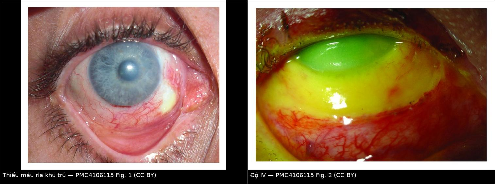
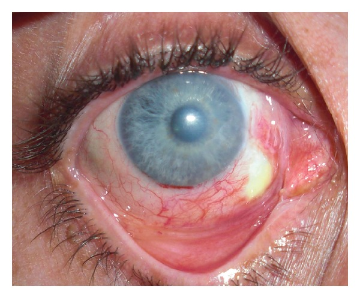
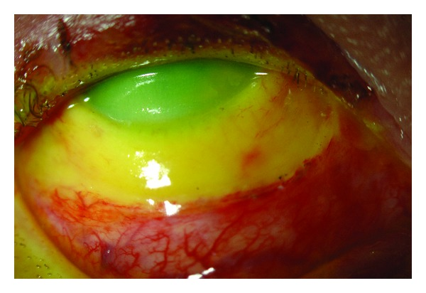

1456 — Bỏng hóa chất mắt cấp: phân độ Roper–Hall & Dua, rửa mắt là điều trị / Chemical ocular burn
Tags: pattern:bong-hoa-chat pattern:thieu-mau-ria pattern:khuyet-bieu-mo-giac-mac pattern:phu-giac-mac vung:giac-mac vung:mat score:Roper-Hall score:Dua protocol:AS-OCT protocol:slit-lamp protocol:UBM incidentaloma:khong
Mức chắc chắn (certainty): tổng hợp y văn (literature synthesis) — 2 bài tổng quan (Eye 2019 PMC7002428, 13 năm kinh nghiệm Moorfields; J Ophthalmol 2014 PMC4106115), 1 bài tổng quan ngắn CMAJ 2019 (PMC6751045), 1 đoàn hệ hồi cứu 135 mắt về pH lúc vào (PMC12271035), 1 case series 9 mắt về bong màng Descemet trên AS-OCT (PMC10538613). Không có thử nghiệm ngẫu nhiên về rửa mắt.
Câu chốt: bỏng hóa chất mắt là cấp cứu mà chẩn đoán là lâm sàng, điều trị là rửa — không chờ chẩn đoán hình ảnh. Thứ quyết định tiên lượng không phải độ đục giác mạc mà là số giờ rìa bị thiếu máu (limbal ischemia): mất mạch rìa = mất nguồn tế bào gốc biểu mô giác mạc → kiết mạc hóa, tân mạch, mù.
1. Tổng quan bệnh học – cơ chế hình ảnh
1.1 Kiềm ăn sâu, acid tự giới hạn — vì sao?
- Kiềm (alkali): ion OH⁻ xà phòng hóa acid béo của màng tế bào → hoại tử hóa lỏng (liquefactive necrosis), không có hàng rào → ngấm sâu vào nhu mô, tiền phòng, bè củng mạc (trabecular meshwork) và thể mi. pH > 11,5 là ngưỡng gây tổn thương giác mạc đáng kể; amoniac thấm vào tiền phòng trong vài giây; vôi sống tạo Ca(OH)₂ pH 12,4. Tổn thương nội nhãn không hồi phục có thể xảy ra trong 5–15 phút.
- Acid: đông vón protein (coagulative necrosis) tạo hàng rào → tự giới hạn độ sâu. Ngoại lệ: acid flohydric (HF) đi qua màng tế bào nhanh như kiềm.
- Vì sao mất mạch rìa là chốt: tế bào gốc biểu mô giác mạc cư trú ở rìa (limbus). Thiếu máu rìa → thiếu oxy + mất tế bào gốc → biểu mô không tái tạo được, kết mạc mọc lên giác mạc (conjunctivalization). Vì vậy phân độ dựa trên số giờ rìa thiếu máu, không dựa vào độ đục.
- Diễn tiến 4 pha: tức thì (giây–giờ) → cấp (0–7 ngày, viêm mạnh, nhãn áp tăng hai pha) → sửa chữa sớm (8–20 ngày, nguy cơ loét chảy/thủng giác mạc do collagenase/MMP) → sửa chữa muộn (> 21 ngày, sẹo, dính mi–kết mạc, glôcôm).
1.2 Chẩn đoán hình ảnh đóng vai trò gì (và không đóng vai trò gì)
- Không có hình ảnh nào thay được đèn khe (slit-lamp) và đo pH. Chẩn đoán và phân độ làm ngay tại giường.
- AS-OCT (anterior segment OCT): đo độ dày giác mạc (theo dõi mỏng dần/nguy cơ thủng), phát hiện bong màng Descemet (Descemet membrane detachment, DMD) — 3 kiểu: A dải căng (PDL + DM bong cùng nhau), B đường lượn sóng tách khỏi nhu mô, C DM bong và tách khỏi PDL; vùng rìa tổn thương + xuất tiết sau giác mạc gợi ý DMD. DMD bị bỏ sót ở ca tổn thương rìa rộng và góp phần làm bề mặt nhãn cầu không ổn định.
- UBM (ultrasound biomicroscopy): góc tiền phòng, thể mi, tách thể mi (cyclodialysis) khi nghi chấn thương kèm theo.
- Siêu âm B-scan: bắt buộc khi giác mạc đục không nhìn được đáy mắt (loại trừ bong võng mạc, xuất huyết dịch kính).
- CT hốc mắt: chỉ khi nghi dị vật/ hạt hóa chất cắm sâu, chấn thương xuyên thấu hoặc vỡ xương hốc mắt (bỏng do nổ bình acquy).
1.3 Ngưỡng định lượng phải nhớ
| Chỉ số | Ngưỡng / số liệu | Ý nghĩa |
|---|---|---|
| pH bề mặt nhãn cầu | ≈ 7,0 mới ngừng rửa; đo lại tới 1 giờ | Còn hạt hóa chất = pH tăng lại |
| pH lúc vào | < 6,5 hoặc > 7,5 | Yếu tố dự báo thiếu hụt tế bào gốc rìa (LSCD) |
| pH dung dịch | kiềm > 11,5 | Ngưỡng tổn thương giác mạc đáng kể |
| Thiếu máu rìa (Roper–Hall) | < 1/3 · 1/3–1/2 · > 1/2 | Độ II · III · IV |
| Thời điểm can thiệp màng ối | trong 2 tuần | Hiệu quả ở độ II–III |
| Tỷ lệ bỏng hóa chất trong chấn thương mắt | 11,5–22,1% | Lý do phải có quy trình cấp cứu |
2. Mẫu hình + chẩn đoán phân biệt theo vị trí (gamut)
- Trung tâm giác mạc: bỏng hóa chất (kiềm/acid) · bỏng nhiệt · viêm giác mạc do tia cực tím (photokeratitis) · SJS/TEN · viêm giác mạc do herpes (bờ nhánh).
- Rìa giác mạc: bỏng kiềm có thiếu máu rìa · bỏng acid (ít thiếu máu hơn) · hạt vôi còn sót · bỏng do dung dịch sát khuẩn/ alcohol gel · bệnh mắt do hóa chất dạng keo.
- Kết mạc – cùng đồ: bỏng kiềm lan sâu · dính mi–kết mạc (symblepharon) sớm · bỏng nhiệt · viêm kết mạc hóa chất nhẹ (không phải "burn" thật).
- Tiền phòng – thể mi: bỏng kiềm nặng (viêm tiền phòng, tăng nhãn áp, tách thể mi) · bỏng acid nặng · chấn thương xuyên thấu kèm hóa chất.
- Bờ mi – da: bỏng hóa chất da mi · bỏng nhiệt · SJS/TEN (tổn thương niêm mạc hai bên, toàn thân).
3. Bảng so sánh phân biệt (ma trận đối chiếu)
| Thực thể (entity) | Hình ảnh lâm sàng điển hình | Chốt vào (rule-in) | Chốt loại (rule-out) | Gợi ý xác nhận |
|---|---|---|---|---|
| Bỏng kiềm | Mất biểu mô rộng, kết mạc trắng bệch/thiếu máu, tiền phòng viêm, đục giác mạc tiến triển | Thiếu máu rìa + pH cao + tiền sử kiềm (vôi, amoniac, xút) | Mạch rìa còn tốt, pH trung tính → nhẹ hơn | Đèn khe + pH; AS-OCT |
| Bỏng acid | Mất biểu mô, bề mặt đông vón, ít thiếu máu rìa | Bờ tổn thương rõ, tự giới hạn, pH thấp | Thiếu máu rìa lan rộng → nghĩ kiềm/HF | pH; hỏi hóa chất |
| Bỏng nhiệt | Da mi bỏng, giác mạc khô–đục khu trú, không có hóa chất | Tiền sử nhiệt/kim loại nóng, pH bình thường | pH bất thường → có hóa chất kèm | Hỏi bệnh sử; đèn khe |
| SJS/TEN | Hai mắt, loét niêm mạc miệng–sinh dục, ban da, dính kết mạc nặng | Tổn thương đa niêm mạc + toàn thân | Một mắt, có hóa chất → bỏng | Da, niêm mạc; sinh thiết nếu cần |
| Hạt vôi còn sót | Chấm trắng ở cùng đồ trên/dưới, pH tăng lại sau rửa | Thấy hạt + pH dao động | pH ổn định sau rửa → không còn hạt | Lật mi đôi, lau cùng đồ |
| Viêm giác mạc do HSV | Bờ nhánh, giác mạc trong, không thiếu máu rìa | Bờ nhánh + không có hóa chất | Thiếu máu rìa + mất biểu mô rộng → bỏng | Nhuộm fluorescein; PCR |

Trái: thiếu máu rìa một góc (vùng trắng, mất mạch) ngày 8 sau bỏng kiềm. Phải: bỏng độ IV — thiếu máu lan rộng và giác mạc đục. Nguồn: Eslani M et al., J Ophthalmol 2014, PMC4106115 Fig. 1 và Fig. 2 — CC BY; ảnh ghép letterbox bằngtools/make_composite.py.
4. Protocol xử trí + hệ phân độ
4.1 Rửa mắt — việc duy nhất không được chậm
- Bắt đầu ngay tại hiện trường bằng nước sạch/nước muối nếu chưa có dung dịch chuẩn; không chờ khám đầy đủ.
- Tại bệnh viện: NaCl 0,9% hoặc Ringer lactat, rửa liên tục ít nhất 10 phút, tiếp tục đến khi pH ≈ 7,0; có thể dùng ống rửa (Morgan lens) hoặc dây truyền dịch.
- Lật mi đôi, lau cùng đồ để lấy hạt vôi/hóa chất dạng bột — nếu không, pH sẽ tăng lại sau rửa. Đo lại pH định kỳ tới 1 giờ.
- Giảm đau tại chỗ giúp rửa nhiều hơn, nhưng thuốc tê có thể làm tăng ngấm hóa chất vào tiền phòng (đặc biệt amoniac) → rửa trước, dùng tê khi cần.
4.2 Phân độ (ghi cả hai hệ)
| Độ | Roper–Hall: giác mạc | Roper–Hall: rìa | Dua: giờ rìa / % kết mạc | Tiên lượng |
|---|---|---|---|---|
| I | Mất biểu mô | Không thiếu máu | 0 giờ / 0% | Tốt |
| II | Đục nhẹ, còn thấy chi tiết mống mắt | < 1/3 | ≤ 3 giờ / ≤ 30% | Tốt |
| III | Mất biểu mô toàn bộ, đục che chi tiết mống mắt | 1/3–1/2 | > 3–6 giờ / > 30–50% | Dè dặt |
| IV | Giác mạc đục, không thấy mống mắt/đồng tử | > 1/2 | > 6–12 giờ / > 50–100% (Dua IV–VI) | Kém |
- Dua V–VI: > 9–< 12 giờ hoặc 12 giờ (toàn bộ rìa) + 100% kết mạc → tiên lượng rất kém, nguy cơ hoại tử phân đoạn trước.
- Ghi thang tương tự (analogue scale) của Dua (ví dụ 6,1–9/51–75%) để theo dõi tiến triển dù độ không đổi.
4.3 Điều trị theo bậc
- Nội khoa: nước mắt nhân tạo không chất bảo quản, mỡ bôi; corticoid tại chỗ 7–10 ngày (giảm viêm, nhưng ngừng/giảm khi có khuyết biểu mô kéo dài vì ức chế tạo collagen → mỏng/thủng); acid ascorbic + citrat, doxycyclin (ức chế MMP); liệt thể mi giảm đau; kiểm soát nhãn áp (ưu tiên thuốc uống để tránh độc biểu mô); kháng sinh dự phòng; vòng chống dính (symblepharon ring).
- Ngoại khoa: ghép màng ối (AMT) trong 2 tuần cho độ II–III (giảm đau, giúp biểu mô hóa); tenonplasty ở độ IV (kéo Tenon còn sống tới rìa để tái lập tưới máu); ghép tế bào gốc rìa (CLAU một mắt — thành công 80–90%; CLET; lr-CLAL/KLAL hai mắt) trì hoãn đến khi viêm ổn; ghép giác mạc xuyên/giác mạc nhân tạo là bước cuối.
flowchart TD
A[Bỏng hóa chất mắt] --> B[Rửa ngay: NaCl 0,9%<br/>đến pH ~ 7, lật mi lấy hạt]
B --> C{Phân độ Roper-Hall / Dua}
C -->|I-II| D[Nội khoa: corticoid ngắn,<br/>ascorbat/citrat, doxycyclin, IOP]
C -->|III| E[AMT trong 2 tuần + nội khoa]
C -->|IV-VI| F[Tenonplasty + AMT,<br/>hội chẩn sớm]
D --> G{Biểu mô hóa sau 2-3 tuần?}
E --> G
F --> G
G -->|Không, có LSCD| H[Ghép tế bào gốc rìa: CLAU/CLET/KLAL]
G -->|Có| I[Theo dõi sẹo, dính mi, glôcôm]
4.4 Theo dõi
- Ngày 1–7: đo lại pH, nhãn áp hai mắt, soi đèn khe tìm dính mi–kết mạc, đánh giá khuyết biểu mô.
- Tuần 2–3: AS-OCT đánh giá độ dày giác mạc/DMD; B-scan nếu không thấy đáy mắt.
- Tháng 1–6: sẹo giác mạc, tân mạch, glôcôm muộn, hở mi, dính cùng đồ.
5. Biến thể bình thường và cạm bẫy
- Kết mạc đỏ che mất thiếu máu rìa: vùng trắng bệch, không mạch mới là thiếu máu; đừng đọc "đỏ = còn tưới máu".
- pH bình thường giả: hạt vôi nằm trong cùng đồ vẫn nhả kiềm sau rửa → luôn lật mi đôi và đo lại pH tới 1 giờ.
- Bỏ sót tăng nhãn áp: tăng hai pha (ngay sau bỏng và muộn do xơ bè) — đo nhãn áp dù giác mạc đục.
- Corticoid quá tay: dùng kéo dài khi khuyết biểu mô chưa lành → chảy giác mạc/thủng; ngưỡng thực hành là 7–10 ngày rồi đánh giá lại.
- Tê tại chỗ trước khi rửa có thể làm tăng ngấm hóa chất (nhất là amoniac): rửa trước, tê sau.
- Bỏ sót chấn thương kèm theo: vụ nổ bình acquy = hóa chất + nhiệt + chấn thương; phải loại trừ dị vật nội nhãn (CT/ X-quang khi cần).
- Không ghi rõ hóa chất, thời điểm, thời gian rửa → mất giá trị pháp lý và không so sánh được lần khám sau (đa số ca bỏng nặng có yếu tố hành hung, 33,3% theo BOSU).
6. Tự lượng giá — Blind Quiz
Ca 1 — Nam 34 tuổi, bỏng kiềm công nghiệp, ngày thứ 8. Nhìn ảnh, mô tả vùng rìa trước khi đọc đáp án.

- Câu hỏi: Vùng trắng ở rìa là gì? Nó thuộc độ mấy theo Roper–Hall? Vì sao phải can thiệp sớm?
Bấm để hiện đáp án (findings + chẩn đoán)
- Dấu hiệu: thiếu máu rìa khu trú ở góc dưới–mũi (vùng nhợt, mất mạng mạch), kèm đục giác mạc nhẹ; đây là vùng mất tế bào gốc rìa.
- Phân độ: tổn thương dưới 1/3 chu vi rìa → Roper–Hall II (nếu đục che chi tiết mống mắt → III); ghi thêm số giờ rìa theo Dua.
- Xử trí: ca này đã được tenonplasty + kéo kết mạc che khuyết; mục tiêu là tái lập tưới máu rìa trước khi kết mạc hóa.
- Nguồn ảnh: Eslani M et al., J Ophthalmol 2014, Fig. 1 — CC BY (PMC4106115).
Ca 2 — Nam 45 tuổi, bỏng kiềm nặng 2 giờ, giác mạc đục hoàn toàn, rìa thiếu máu gần 360°.

- Câu hỏi: Phân độ? Tiên lượng? Kể 3 bước điều trị ngoại khoa theo thứ tự?
Bấm để hiện đáp án
- Dấu hiệu: giác mạc đục, không thấy mống mắt, thiếu máu rìa lan rộng (vượt 1/2 chu vi) → Roper–Hall IV, tương ứng Dua IV–VI tùy số giờ rìa/kết mạc.
- Tiên lượng: kém — nguy cơ LSCD, kết mạc hóa, glôcôm, thủng giác mạc; cần theo dõi suốt đời.
- Ngoại khoa: (1) tenonplasty + AMT sớm để tái lập tưới máu và che bề mặt; (2) kiểm soát viêm/nhãn áp, chờ bề mặt ổn; (3) ghép tế bào gốc rìa (CLAU/CLET/KLAL) khi hết viêm, sau đó mới ghép giác mạc nếu cần.
- Nguồn ảnh: Eslani M et al., J Ophthalmol 2014, Fig. 2 — CC BY (PMC4106115).
Bài liên quan chéo
- 400 — Tổng quan Mắt & thị giác
- 1444 — Viêm màng bồ đào sau chấn thương kín
- 1445 — Bong mảnh ghép sau ghép nội mô (DSAEK/DMEK)
- 449 — Chấn thương mắt do dị vật
- 411 — Siêu âm nhãn cầu
Disclaimer: Tài liệu học tập, không dùng để chẩn đoán độc lập khi chưa có bác sĩ chuyên khoa hướng dẫn.